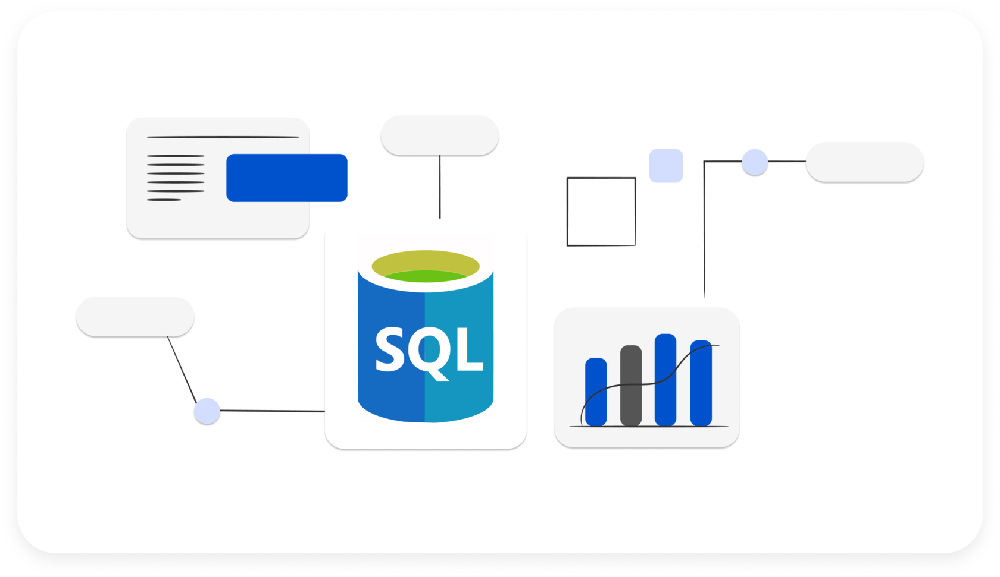

public-holidays Analysis
This data analysis project focus on analysing public holidays. The project likely aims to provide insights and trends about public holidays, enabling users to make informed decisions or predictions.
Technologies used: Python, Pandas, Matplotlib
Source Code
CreditCardAnalysis

This project uses SQL to analyze Consumer Credit Card usage data. The goal of the project is to answer a set of questions about credit card usage and consumer spending habits.
Technologies used: MySQL
Source Code
Little Lemon Restaurant Management System

This project is designed to manage the operations of the Little Lemon fast-food restaurant and is a part of the Meta Database Engineer Certificate course on Coursera. The project uses MySQL for database modeling and Tableau for data analysis.
Technologies used: SQL, Tableau, Excel, Python, Pandas, Matplotlib
Source Code
SQL

SQL, or Structured Query Language, is a standardized programming language specifically designed for managing and manipulating data within relational database management systems (RDBMS). It serves as the primary means of communication with these databases, allowing users to perform various operations
Technologies used: SQL
Source Code
Advances SQL
SQL, or Structured Query Language, is a standardized programming language specifically designed for managing and manipulating data within relational database management systems (RDBMS). It serves as the primary means of communication with these databases, allowing users to perform various operations
Technologies used: SQL
Source Code
public-holidays Analysis 6
This data analysis project focus on analysing public holidays. The project likely aims to provide insights and trends about public holidays, enabling users to make informed decisions or predictions.
Technologies used: Python, Pandas, Matplotlib
Source Code